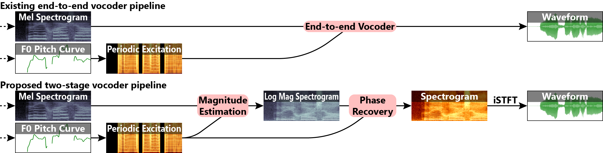

Abstract While denoising diffusion probabilistic models have proven powerful in many generative tasks, they still lag behind Generative Adversarial Networks (GANs) in vocoder performance, especially when synthesizing singing voice. Existing diffusion vocoders rely on end-to-end waveform reconstruction at linear amplitude scale, which conflicts with the logarithmic nature of human audio perception. This leads to the final denoising step recovering much more information than earlier steps, as reported in existing vocoder studies. To address this, we propose a novel two-stage approach: the first stage uses diffusion to generate a full-resolution log magnitude spectrogram alone, leaving the second stage a typical phase recovery problem. The spectrogram is designed to have increased frame rate, intentionally introducing spectral redundancies to simplify phase recovery, enabling even conventional algorithms like Griffin-Lim to perform nearly on par with neural methods. This results in an efficient, straightforward vocoding pipeline that integrates seamlessly with existing diffusion frameworks, without requiring custom noise schedules or distributions. Experiments demonstrated that this streamlined approach outperformed existing diffusion vocoders in all evaluation metrics by a large margin, while achieving comparable performance to GAN-based counterparts. Moreover, it exhibits particularly outstanding performance on high-pitched vocals like opera.
|
{{ sampleItem.sampleType }} Audio ID: "{{ sampleItem.sampleName }}" |
|
|---|---|
|
(Proposed) {{ configItem.captionLeft }} {{ configItem.caption }} {{ configItem.captionBelow }} |